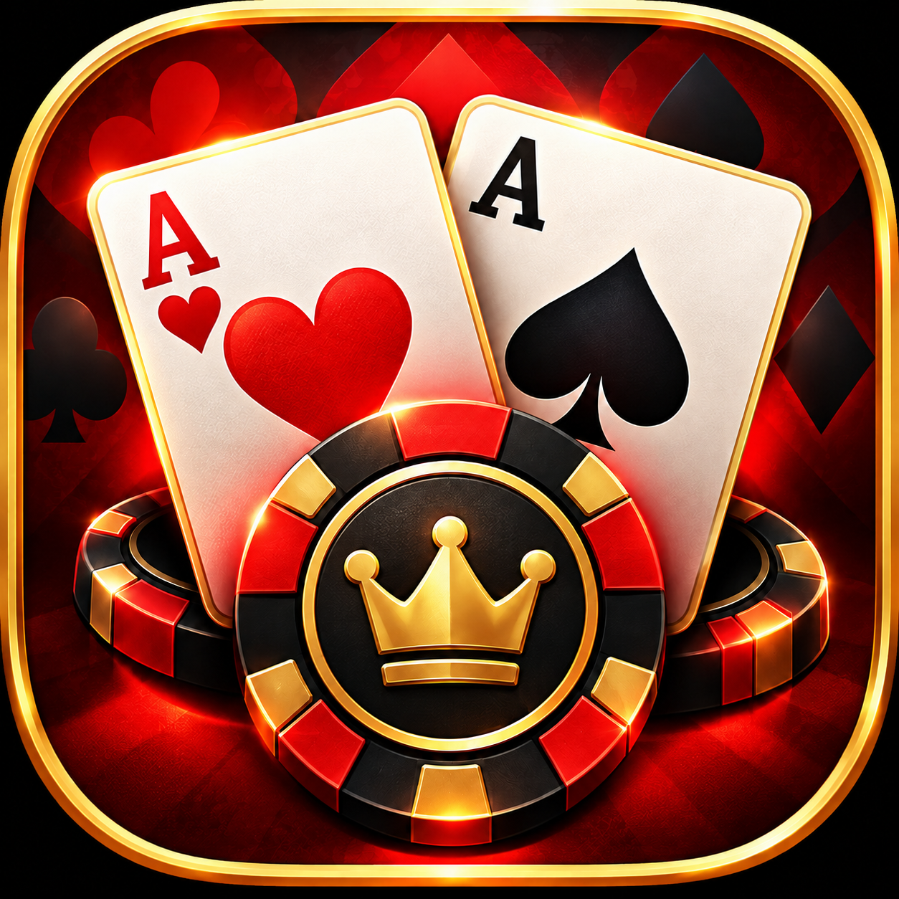

01 / CARD GAME
Red Black
Poker.
A classic five-card draw game, rebuilt for the browser. A wild Joker, a red-or-black double-up round, and the original electronic sounds bring the card-table rhythm to HTML5.
Facebook edition in developer testing
Play credits have no cash value. No real-money wagering or cash redemption.
Privacy & player information